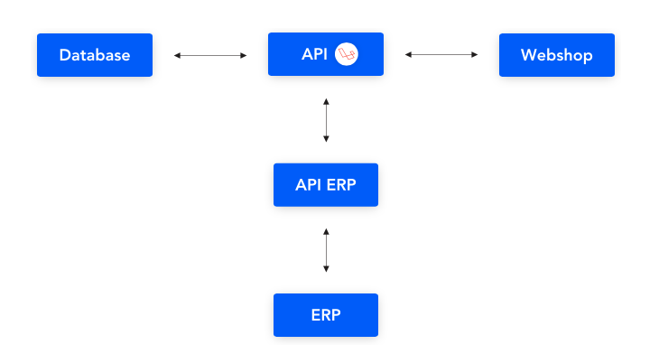

Wat betekent API
De afkorting API staat voor Application Programming Interface. Een API kun je eenvoudig vergelijken met een lamp en een stekkerblok. Als je wilt dat de lamp aan gaat, moet je hem aansluiten op het stekkerblok. Als de stekker van de lamp in het stekkerblok past, krijgt de lamp stroom en gaat hij aan. Op dezelfde manier werkt een API: het zorgt voor de uitwisseling van gegevens tussen twee softwaresystemen. Het is een manier waarop programma's met elkaar kunnen communiceren en informatie kunnen delen.
Wat is een API koppeling
Stel je voor dat je bedrijfssoftware hebt, zoals een ERP-systeem, en je wilt een webshop maken voor je producten. Die webshop kan in een ander systeem zijn gebouwd, bijvoorbeeld maatwerk. Het is belangrijk dat deze twee systemen met elkaar kunnen praten. Als klanten iets bestellen op je webshop, moet die informatie automatisch in je ERP-systeem komen. Dit bespaart je veel tijd, omdat je niet alles handmatig hoeft over te zetten. De communicatie tussen de systemen gebeurt via API's. Je ERP-systeem heeft een API en je webshop ook. Door een API-koppeling te maken, kunnen ze gemakkelijk met elkaar communiceren.
Heel simpel gezegd is dat wat een API doet: het zorgt voor communicatie tussen verschillende software. Het haalt gegevens uit het ene systeem en stuurt ze naar een ander systeem. Naast het ophalen en opslaan van data kan een API ook berekeningen maken. Bijvoorbeeld, als iemand 20 stuks van een product wil, kan de API de prijs per stuk uit het ERP-systeem halen en het totaalbedrag berekenen. Een groot voordeel van een API is dat dit alles automatisch gaat, zonder dat mensen erbij hoeven te komen kijken. Vaak worden verschillende systemen met elkaar verbonden, wat het ingewikkeld kan maken. Eén API kan met meerdere systemen tegelijk communiceren, zoals je in een afbeelding zou kunnen zien. Je ziet nu waarschijnlijk hoe belangrijk een goede API-koppeling is, want als die niet goed werkt, kunnen de systemen ook niet goed functioneren en kunnen er fouten optreden.